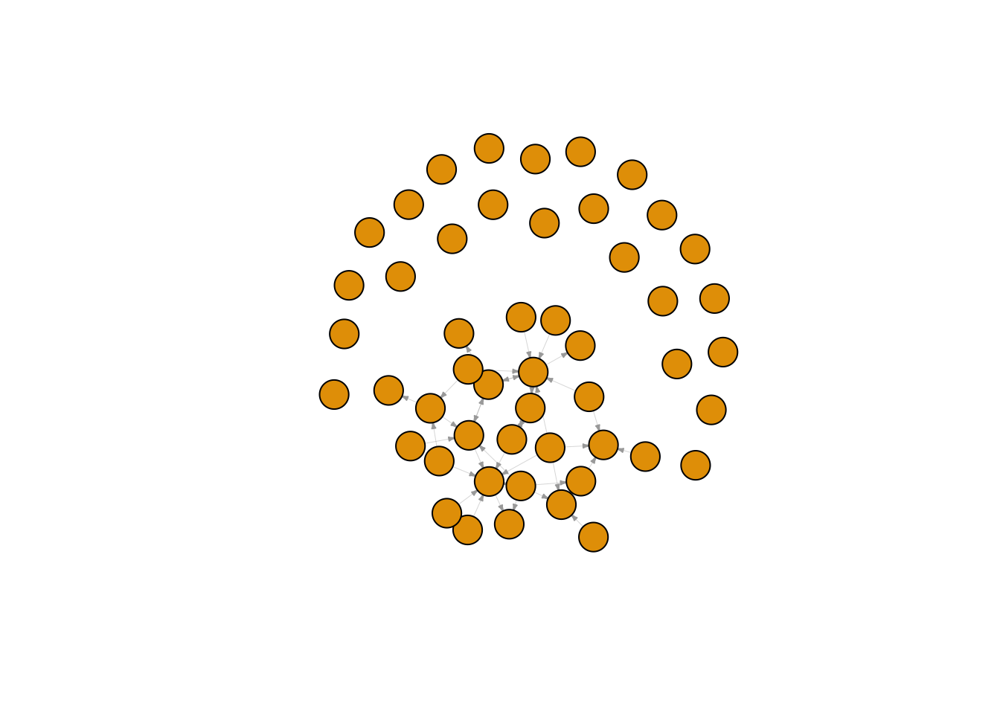
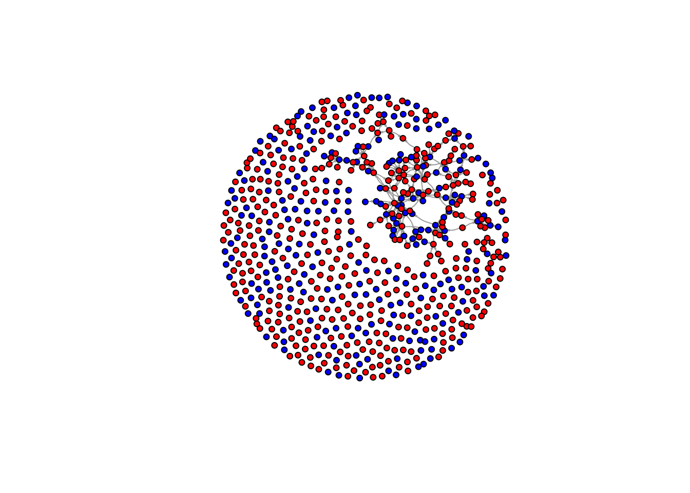

Chunk 1
#copied from jochem
# (sociology, RU)
demographics <- do.call(rbind.data.frame, scholars$demographics)
demographics <- demographics %>% # who's who
mutate(Universiteit1.22 = replace(Universiteit1.22, is.na(Universiteit1.22), ""), Universiteit2.22 = replace(Universiteit2.22,
is.na(Universiteit2.22), ""), Universiteit1.24 = replace(Universiteit1.24, is.na(Universiteit1.24),
""), Universiteit2.24 = replace(Universiteit2.24, is.na(Universiteit2.24), ""), discipline.22 = replace(discipline.22,
is.na(discipline.22), ""), discipline.24 = replace(discipline.24, is.na(discipline.24), ""))
sample <- which((demographics$Universiteit1.22 == "RU" | demographics$Universiteit2.22 == "RU" | demographics$Universiteit1.24 ==
"RU" | demographics$Universiteit2.24 == "RU") & (demographics$discipline.22 == "sociology" | demographics$discipline.24 ==
"sociology")) #sociologists at ru
demographics_soc <- demographics[sample, ]
scholars_sel <- lapply(scholars, "[", sample)
Chunk 2
ids <- demographics_soc$au_id #openalex ids
wave2 <- wave1 <- matrix(0, nrow = length(ids), ncol = length(ids), dimnames = list(ids, ids))
#matrix for all ids
Chunk 3
works <- scholars_sel$work
works_id <- unlist(lapply(works, function(l) l$id)) #id for works
works_author <- unlist(lapply(works, function(l) l$author), recursive = FALSE) #authors of the work
works_year <- unlist(lapply(works, function(l) l$publication_year), recursive = FALSE) #year
df_works <- tibble(works_id, works_author, works_year) #id-work, authors, year
view(df_works)
dups <- which(duplicated(works_id))
# why are there some many papers of Batenburg duplicates
df_works <- df_works[-dups, ]
df_works_newer <- df_works[df_works$works_year > 2014, ]
df_works_w2 <- df_works[df_works$works_year > 2019, ]
Chunk 4
If we wanted to, we
could
first to others for (i in 1:nrow(df_works_w2)) { ego <-
df_works_w2\(works_author[i][[1]]\)au_id[1] alters <-
df_works_w2\(works_author[i][[1]]\)au_id[-1]
if (sum(ids %in% ego) > 0 & sum(ids %in% alters) > 0) {
wave2[which(ids %in% ego), which(ids %in% alters)] <- 1
}
} for each row, of dataframes of work, do egos (first auth) and
alters (others) on matrix (and then: are they the same or not)
last to others for (i in 1:nrow(df_works_w2)) { ego <-
rev(df_works_w2\(works_author[i][[1]]\)au_id)[1] alters
<- rev(df_works_w2\(works_author[i][[1]]\)au_id)[-1]
if (sum(ids %in% ego) > 0 & sum(ids %in% alters) > 0) {
wave2[which(ids %in% ego), which(ids %in% alters)] <- 1
}
} for each row, of dataframes of work, do egos (last auth) and alters
(others) on matrix (and then: are they the same or not)
undirected for (i in 1:nrow(df_works_w2)) { egos <-
df_works_w2\(works_author[i][[1]]\)au_id
if (sum(ids %in% egos) > 0) {
wave2[which(ids %in% egos), which(ids %in% egos)] <- 1
}
}for each row, of dataframes of work, do egos (all authors) on matrix
(and then: are they the same or not)
About the
parameters:
university: Character vector with names of universities. We have
several universities in the Netherlands. See above for relevant names.
discipline: Character vector, either sociology or political science or
both. waves: a list of numeric vectors with start and end year of wave.
type: “first”: directed: first author sending to others “last”:
directed: last author sending to others “all”: undirected: ties between
all authors Output: - a list - $nets: array of nomination networks. -
$data: sample of data (scholars)
Chunk 5
#so this is all we are doin'
fcolnet <- function(data = scholars, university = "RU", discipline = "sociology", waves = list(c(2015,
2018), c(2019, 2023)), type = c("first")) {
# step 1
demographics <- do.call(rbind.data.frame, data$demographics)
demographics <- demographics %>%
mutate(Universiteit1.22 = replace(Universiteit1.22, is.na(Universiteit1.22), ""), Universiteit2.22 = replace(Universiteit2.22,
is.na(Universiteit2.22), ""), Universiteit1.24 = replace(Universiteit1.24, is.na(Universiteit1.24),
""), Universiteit2.24 = replace(Universiteit2.24, is.na(Universiteit2.24), ""), discipline.22 = replace(discipline.22,
is.na(discipline.22), ""), discipline.24 = replace(discipline.24, is.na(discipline.24), ""))
sample <- which((demographics$Universiteit1.22 %in% university | demographics$Universiteit2.22 %in%
university | demographics$Universiteit1.24 %in% university | demographics$Universiteit2.24 %in%
university) & (demographics$discipline.22 %in% discipline | demographics$discipline.24 %in% discipline))
demographics_soc <- demographics[sample, ]
scholars_sel <- lapply(scholars, "[", sample)
# step 2
ids <- demographics_soc$au_id
nwaves <- length(waves)
nets <- array(0, dim = c(nwaves, length(ids), length(ids)), dimnames = list(wave = 1:nwaves, ids,
ids))
dimnames(nets)
# step 3
df_works <- tibble(works_id = unlist(lapply(scholars_sel$work, function(l) l$id)), works_author = unlist(lapply(scholars_sel$work,
function(l) l$author), recursive = FALSE), works_year = unlist(lapply(scholars_sel$work, function(l) l$publication_year),
recursive = FALSE))
df_works <- df_works[!duplicated(df_works), ]
# step 4
if (type == "first") {
for (j in 1:nwaves) {
df_works_w <- df_works[df_works$works_year >= waves[[j]][1] & df_works$works_year <= waves[[j]][2],
]
for (i in 1:nrow(df_works_w)) {
ego <- df_works_w$works_author[i][[1]]$au_id[1]
alters <- df_works_w$works_author[i][[1]]$au_id[-1]
if (sum(ids %in% ego) > 0 & sum(ids %in% alters) > 0) {
nets[j, which(ids %in% ego), which(ids %in% alters)] <- 1
}
}
}
}
if (type == "last") {
for (j in 1:nwaves) {
df_works_w <- df_works[df_works$works_year >= waves[[j]][1] & df_works$works_year <= waves[[j]][2],
]
for (i in 1:nrow(df_works_w)) {
ego <- rev(df_works_w$works_author[i][[1]]$au_id)[1]
alters <- rev(df_works_w$works_author[i][[1]]$au_id)[-1]
if (sum(ids %in% ego) > 0 & sum(ids %in% alters) > 0) {
nets[j, which(ids %in% ego), which(ids %in% alters)] <- 1
}
}
}
}
if (type == "all") {
for (j in 1:nwaves) {
df_works_w <- df_works[df_works$works_year >= waves[[j]][1] & df_works$works_year <= waves[[j]][2],
]
for (i in 1:nrow(df_works_w)) {
egos <- df_works_w$works_author[i][[1]]$au_id
if (sum(ids %in% egos) > 0) {
nets[j, which(ids %in% egos), which(ids %in% egos)] <- 1
}
}
}
}
output <- list()
output$data <- scholars_sel
output$nets <- nets
return(output)
}
Chunk 6
#save the output of your function
matrix_ru_soc <- fcolnet(data = scholars,
university = "RU",
discipline = "sociology",
waves = list(c(2015, 2018), c(2019, 2023)),
type = c("first"))
mrs_graph1 <- igraph::graph_from_adjacency_matrix(
matrix_ru_soc$nets[1,,], #for this example I take the first wave of data. (thus I select the array of networks and take the first matrix)
mode = c("directed"),
weighted = NULL,
diag = FALSE,
add.colnames = NULL,
add.rownames = NULL
)
## Warning in igraph::graph_from_adjacency_matrix(matrix_ru_soc$nets[1, , ], :
## Same attribute for columns and rows, row names are ignored
plot(mrs_graph1,
vertex.label= NA,
edge.width = 0.2,
edge.arrow.size =0.2)

Chunk 7
more!
matrix_ru_socpol <- fcolnet(data = scholars,
university = c("RU", "UvT"),
discipline = c("sociology", "political science"),
waves = list(c(2015, 2018), c(2019, 2023)),
type = c("all"))
mrsp <- igraph::graph_from_adjacency_matrix(
matrix_ru_socpol$nets[2,,], #now, I take the second wave
mode = c("directed"),
weighted = NULL,
diag = FALSE,
add.colnames = NULL
)
plot(mrsp,
vertex.label = NA,
vertex.size = .5,
edge.curved = 0.2, # curved edges is always a nice touch
edge.arrow.size = 0.1)

#Let us find ego characteristics.
#first fish out the data
matrix_ru_socpol_df <- matrix_ru_socpol$data
#same complicated structure as 'scholars' thus first make a dataframe from the list in which all info was saved.
mrusp_df_ego <- do.call(rbind.data.frame, matrix_ru_socpol_df$demographics)
#DO NOT MESS UP THE ORDER! THUS IF YOU JOIN THIS DATA WITH YOUR OWN DATA CHECK THAT ORDER REMAINED THE SAME!!
plot(mrsp,
vertex.color = ifelse(mrusp_df_ego$discipline.24 == "sociology", "red", "blue"), #now, I can use actor attributes for plotting.
vertex.label = NA,
edge.width = 0.2,
edge.arrow.size =0.2,
vertex.size = 5)

Hannah’s Shit
Ok, we want an overview of the different universities we are dealing
with, and the different disciplines – in other words, we want to see how
clean our data actually is.
The Universities
| “UU” |
Utrecht University |
the Netherlands |
| “RUG” |
Rijksuniversiteit Groningen |
the Netherlands |
| “UvA” |
Universiteit van Amsterdam |
the Netherlands |
| “EUR” |
Erasmus Universiteit Rotterdam |
the Netherlands |
| “Leiden” |
Leiden University |
the Netherlands |
| “Bocconi University” |
Bocconi University, Milan |
Italy |
| RU” |
Radboud University |
the Netherlands |
| “Universita degli studi di Milano” |
Universita degli studi di Milano |
Italy |
| “VU” |
Vrije Universiteit, Amsterdam |
the Netherlands |
| “UvT” |
Tilburg University |
the Netherlands |
| “Universiteit Gent” |
University Gent |
Belgium |
| “Universiteit Stockholm” |
University of Stockholm |
Sweden |
| “University Linköping” |
University of Linköping |
Sweden |
| “TU Delft” |
TU Delft |
the Netherlands |
| “University of Turku” |
University of Turku |
Finland |
| “Frankfurt School of Finance & Management” |
Frankfurt School of Finance & Management |
Germany |
| “University of Lausanne” |
University of Lausanne |
Switzerland |
| “UvH” |
University of Humanistic Studies, Utrecht |
the Netherlands |
| “Boston University” |
Boston University |
the US |
| “Trento University” |
Trento Univeristy |
Italy |
| “Uni Gothenburg” |
University of Gothenburg |
Sweden |
| “Uni Berlijn” |
University of Berling |
Germany |
| “Uni of Victoria” |
University of Victoria |
Canada |
| “Uni of Lausanne” |
University of Lausanne |
Switzerland |
| “Shadona uni” |
Shadong University |
China |
| “University of Cologne” |
University of Cologne |
Germany |
| “Shandong uni” |
Shadong University |
China |
Now see if we can put this into a social network
plot/graph/whatever.
matrix_all_socpol <- fcolnet(data = scholars,
university = c("UU", "RUG", "UvA", "EUR", "Leiden", "RU",
"VU", "UvT", "TU Delft", "UvH"),
discipline = c("sociology", "political science"),
waves = list(c(2015, 2018), c(2019, 2023)))
mall_w1 <- igraph::graph_from_adjacency_matrix(
matrix_all_socpol$nets, #now, I take the second wave
mode = c("directed"),
weighted = NULL,
diag = FALSE,
add.colnames = NULL
)
## Warning: The `adjmatrix` argument of `graph_from_adjacency_matrix()` must
## be a matrix as of igraph 1.6.0.
## This warning is displayed once every 8 hours.
## Call `lifecycle::last_lifecycle_warnings()` to see where this
## warning was generated.
#nicely_chosen <- layout_nicely(mall_w1)
#kk <- layout_with_kk(mall_w1)
#lgl <- layout_with_lgl(mall_w1)
random <- layout_randomly(mall_w1)
plot(mall_w1,
vertex.color = ifelse(matrix_all_socpol$discipline.24 == "sociology", "red", "blue"),
vertex.size = 4, # we'll vertices a bit smaller
vertex.label = NA,
edge.curved = 0.2, # curved edges is always a nice touch
edge.arrow.size = 0.1)

And extract all names of the researchers
view(demographics)
names <- demographics$Naam
au_id <- demographics$au_id
names <- cbind(names, au_id)
view(names)
LS0tCnRpdGxlOiAiRGF0YXByZXAiCm91dHB1dDogaHRtbF9kb2N1bWVudApkYXRlOiAiMjAyNC0wOS0yNSIKLS0tCgpgYGB7ciBsaWJyYXJpZXMsIGluY2x1ZGUgPSBGfQojcm0obGlzdCA9IGxzKCkpCnJlcXVpcmUodGlkeXZlcnNlKQpyZXF1aXJlKGlncmFwaCkKcmVxdWlyZShzaGlueSkKcmVxdWlyZShSU2llbmEpCnJlcXVpcmUocm1kZm9ybWF0cykKcmVxdWlyZShwcmV0dHlkb2MpCnJlcXVpcmUoaHJicnRoZW1lcykKcmVxdWlyZSh0aW50KQpyZXF1aXJlKHR1ZnRlKQpyZXF1aXJlKHBzeWNoKQpgYGAKCmBgYHtyIHNldHVwLCBpbmNsdWRlPUZBTFNFfQpsb2FkKCIvVXNlcnMvaGFubmFoL0Rlc2t0b3AvU2Vhc29uIDcsIFBhcnQgMS9Tb2NpYWwgTmV0d29ya3MvbGFiam91cm5hbC9zY2hvbGFyc18yMDI0MDkyNC5yZGEiKQpzY2hvbGFycyA8LSB4CnJtKHgpCmBgYAoKIyBDaHVuayAxCgpgYGB7ciBjb3BpZWQgZnJvbSBqb2NoZW0gMX0KI2NvcGllZCBmcm9tIGpvY2hlbQojIChzb2Npb2xvZ3ksIFJVKQpkZW1vZ3JhcGhpY3MgPC0gZG8uY2FsbChyYmluZC5kYXRhLmZyYW1lLCBzY2hvbGFycyRkZW1vZ3JhcGhpY3MpCmRlbW9ncmFwaGljcyA8LSBkZW1vZ3JhcGhpY3MgJT4lICMgd2hvJ3Mgd2hvCiAgICBtdXRhdGUoVW5pdmVyc2l0ZWl0MS4yMiA9IHJlcGxhY2UoVW5pdmVyc2l0ZWl0MS4yMiwgaXMubmEoVW5pdmVyc2l0ZWl0MS4yMiksICIiKSwgVW5pdmVyc2l0ZWl0Mi4yMiA9IHJlcGxhY2UoVW5pdmVyc2l0ZWl0Mi4yMiwKICAgICAgICBpcy5uYShVbml2ZXJzaXRlaXQyLjIyKSwgIiIpLCBVbml2ZXJzaXRlaXQxLjI0ID0gcmVwbGFjZShVbml2ZXJzaXRlaXQxLjI0LCBpcy5uYShVbml2ZXJzaXRlaXQxLjI0KSwKICAgICAgICAiIiksIFVuaXZlcnNpdGVpdDIuMjQgPSByZXBsYWNlKFVuaXZlcnNpdGVpdDIuMjQsIGlzLm5hKFVuaXZlcnNpdGVpdDIuMjQpLCAiIiksIGRpc2NpcGxpbmUuMjIgPSByZXBsYWNlKGRpc2NpcGxpbmUuMjIsCiAgICAgICAgaXMubmEoZGlzY2lwbGluZS4yMiksICIiKSwgZGlzY2lwbGluZS4yNCA9IHJlcGxhY2UoZGlzY2lwbGluZS4yNCwgaXMubmEoZGlzY2lwbGluZS4yNCksICIiKSkKCnNhbXBsZSA8LSB3aGljaCgoZGVtb2dyYXBoaWNzJFVuaXZlcnNpdGVpdDEuMjIgPT0gIlJVIiB8IGRlbW9ncmFwaGljcyRVbml2ZXJzaXRlaXQyLjIyID09ICJSVSIgfCBkZW1vZ3JhcGhpY3MkVW5pdmVyc2l0ZWl0MS4yNCA9PQogICAgIlJVIiB8IGRlbW9ncmFwaGljcyRVbml2ZXJzaXRlaXQyLjI0ID09ICJSVSIpICYgKGRlbW9ncmFwaGljcyRkaXNjaXBsaW5lLjIyID09ICJzb2Npb2xvZ3kiIHwgZGVtb2dyYXBoaWNzJGRpc2NpcGxpbmUuMjQgPT0KICAgICJzb2Npb2xvZ3kiKSkgI3NvY2lvbG9naXN0cyBhdCBydQoKZGVtb2dyYXBoaWNzX3NvYyA8LSBkZW1vZ3JhcGhpY3Nbc2FtcGxlLCBdCnNjaG9sYXJzX3NlbCA8LSBsYXBwbHkoc2Nob2xhcnMsICJbIiwgc2FtcGxlKQpgYGAKCiMgQ2h1bmsgMgoKYGBge3IgY29waWVkIGZyb20gam9jaGVtIDJ9CmlkcyA8LSBkZW1vZ3JhcGhpY3Nfc29jJGF1X2lkICNvcGVuYWxleCBpZHMKd2F2ZTIgPC0gd2F2ZTEgPC0gbWF0cml4KDAsIG5yb3cgPSBsZW5ndGgoaWRzKSwgbmNvbCA9IGxlbmd0aChpZHMpLCBkaW1uYW1lcyA9IGxpc3QoaWRzLCBpZHMpKQojbWF0cml4IGZvciBhbGwgaWRzCmBgYAoKIyBDaHVuayAzCgpgYGB7ciBjb3BpZWQgZnJvbSBqb2NoZW0gM30Kd29ya3MgPC0gc2Nob2xhcnNfc2VsJHdvcmsKd29ya3NfaWQgPC0gdW5saXN0KGxhcHBseSh3b3JrcywgZnVuY3Rpb24obCkgbCRpZCkpICNpZCBmb3Igd29ya3MKd29ya3NfYXV0aG9yIDwtIHVubGlzdChsYXBwbHkod29ya3MsIGZ1bmN0aW9uKGwpIGwkYXV0aG9yKSwgcmVjdXJzaXZlID0gRkFMU0UpICNhdXRob3JzIG9mIHRoZSB3b3JrCndvcmtzX3llYXIgPC0gdW5saXN0KGxhcHBseSh3b3JrcywgZnVuY3Rpb24obCkgbCRwdWJsaWNhdGlvbl95ZWFyKSwgcmVjdXJzaXZlID0gRkFMU0UpICN5ZWFyCmRmX3dvcmtzIDwtIHRpYmJsZSh3b3Jrc19pZCwgd29ya3NfYXV0aG9yLCB3b3Jrc195ZWFyKSAjaWQtd29yaywgYXV0aG9ycywgeWVhcgp2aWV3KGRmX3dvcmtzKQpkdXBzIDwtIHdoaWNoKGR1cGxpY2F0ZWQod29ya3NfaWQpKQojIHdoeSBhcmUgdGhlcmUgc29tZSBtYW55IHBhcGVycyBvZiBCYXRlbmJ1cmcgZHVwbGljYXRlcwoKZGZfd29ya3MgPC0gZGZfd29ya3NbLWR1cHMsIF0KZGZfd29ya3NfbmV3ZXIgPC0gZGZfd29ya3NbZGZfd29ya3Mkd29ya3NfeWVhciA+IDIwMTQsIF0KZGZfd29ya3NfdzIgPC0gZGZfd29ya3NbZGZfd29ya3Mkd29ya3NfeWVhciA+IDIwMTksIF0gCmBgYAoKIyBDaHVuayA0CgojIyBJZiB3ZSB3YW50ZWQgdG8sIHdlIGNvdWxkCgpmaXJzdCB0byBvdGhlcnMKZm9yIChpIGluIDE6bnJvdyhkZl93b3Jrc193MikpIHsKICAgIGVnbyA8LSBkZl93b3Jrc193MiR3b3Jrc19hdXRob3JbaV1bWzFdXSRhdV9pZFsxXQogICAgYWx0ZXJzIDwtIGRmX3dvcmtzX3cyJHdvcmtzX2F1dGhvcltpXVtbMV1dJGF1X2lkWy0xXQoKICAgIGlmIChzdW0oaWRzICVpbiUgZWdvKSA+IDAgJiBzdW0oaWRzICVpbiUgYWx0ZXJzKSA+IDApIHsKICAgICAgICB3YXZlMlt3aGljaChpZHMgJWluJSBlZ28pLCB3aGljaChpZHMgJWluJSBhbHRlcnMpXSA8LSAxCiAgICB9Cn0gZm9yIGVhY2ggcm93LCBvZiBkYXRhZnJhbWVzIG9mIHdvcmssIGRvIGVnb3MgKGZpcnN0IGF1dGgpIGFuZCBhbHRlcnMgKG90aGVycykgb24gbWF0cml4IChhbmQgdGhlbjogYXJlIHRoZXkgdGhlIHNhbWUgb3Igbm90KQoKbGFzdCB0byBvdGhlcnMKZm9yIChpIGluIDE6bnJvdyhkZl93b3Jrc193MikpIHsKICAgIGVnbyA8LSByZXYoZGZfd29ya3NfdzIkd29ya3NfYXV0aG9yW2ldW1sxXV0kYXVfaWQpWzFdCiAgICBhbHRlcnMgPC0gcmV2KGRmX3dvcmtzX3cyJHdvcmtzX2F1dGhvcltpXVtbMV1dJGF1X2lkKVstMV0KCiAgICBpZiAoc3VtKGlkcyAlaW4lIGVnbykgPiAwICYgc3VtKGlkcyAlaW4lIGFsdGVycykgPiAwKSB7CiAgICAgICAgd2F2ZTJbd2hpY2goaWRzICVpbiUgZWdvKSwgd2hpY2goaWRzICVpbiUgYWx0ZXJzKV0gPC0gMQogICAgfQp9IGZvciBlYWNoIHJvdywgb2YgZGF0YWZyYW1lcyBvZiB3b3JrLCBkbyBlZ29zIChsYXN0IGF1dGgpIGFuZCBhbHRlcnMgKG90aGVycykgb24gbWF0cml4IChhbmQgdGhlbjogYXJlIHRoZXkgdGhlIHNhbWUgb3Igbm90KQoKdW5kaXJlY3RlZApmb3IgKGkgaW4gMTpucm93KGRmX3dvcmtzX3cyKSkgewogICAgZWdvcyA8LSBkZl93b3Jrc193MiR3b3Jrc19hdXRob3JbaV1bWzFdXSRhdV9pZAoKICAgIGlmIChzdW0oaWRzICVpbiUgZWdvcykgPiAwKSB7CiAgICAgICAgd2F2ZTJbd2hpY2goaWRzICVpbiUgZWdvcyksIHdoaWNoKGlkcyAlaW4lIGVnb3MpXSA8LSAxCiAgICB9Cn1mb3IgZWFjaCByb3csIG9mIGRhdGFmcmFtZXMgb2Ygd29yaywgZG8gZWdvcyAoYWxsIGF1dGhvcnMpIG9uIG1hdHJpeCAoYW5kIHRoZW46IGFyZSB0aGV5IHRoZSBzYW1lIG9yIG5vdCkKCgoKIyBBYm91dCB0aGUgcGFyYW1ldGVyczoKCltkYXRhXTogb3VyIHNjaG9sYXJzIGZpbGUKdW5pdmVyc2l0eTogQ2hhcmFjdGVyIHZlY3RvciB3aXRoIG5hbWVzIG9mIHVuaXZlcnNpdGllcy4gV2UgaGF2ZSBzZXZlcmFsIHVuaXZlcnNpdGllcyBpbiB0aGUgTmV0aGVybGFuZHMuIFNlZSBhYm92ZSBmb3IgcmVsZXZhbnQgbmFtZXMuCmRpc2NpcGxpbmU6IENoYXJhY3RlciB2ZWN0b3IsIGVpdGhlciBzb2Npb2xvZ3kgb3IgcG9saXRpY2FsIHNjaWVuY2Ugb3IgYm90aC4Kd2F2ZXM6IGEgbGlzdCBvZiBudW1lcmljIHZlY3RvcnMgd2l0aCBzdGFydCBhbmQgZW5kIHllYXIgb2Ygd2F2ZS4KdHlwZToKImZpcnN0IjogZGlyZWN0ZWQ6IGZpcnN0IGF1dGhvciBzZW5kaW5nIHRvIG90aGVycwoibGFzdCI6IGRpcmVjdGVkOiBsYXN0IGF1dGhvciBzZW5kaW5nIHRvIG90aGVycwoiYWxsIjogdW5kaXJlY3RlZDogdGllcyBiZXR3ZWVuIGFsbCBhdXRob3JzCk91dHB1dDogLSBhIGxpc3QKLSAkbmV0czogYXJyYXkgb2Ygbm9taW5hdGlvbiBuZXR3b3Jrcy4KLSAkZGF0YTogc2FtcGxlIG9mIGRhdGEgKHNjaG9sYXJzKQoKIyBDaHVuayA1CmBgYHtyIGNvcGllZCBmcm9tIGpvY2hlbSA1fQojc28gdGhpcyBpcyBhbGwgd2UgYXJlIGRvaW4nCmZjb2xuZXQgPC0gZnVuY3Rpb24oZGF0YSA9IHNjaG9sYXJzLCB1bml2ZXJzaXR5ID0gIlJVIiwgZGlzY2lwbGluZSA9ICJzb2Npb2xvZ3kiLCB3YXZlcyA9IGxpc3QoYygyMDE1LAogICAgMjAxOCksIGMoMjAxOSwgMjAyMykpLCB0eXBlID0gYygiZmlyc3QiKSkgewoKICAgICMgc3RlcCAxCiAgICBkZW1vZ3JhcGhpY3MgPC0gZG8uY2FsbChyYmluZC5kYXRhLmZyYW1lLCBkYXRhJGRlbW9ncmFwaGljcykKICAgIGRlbW9ncmFwaGljcyA8LSBkZW1vZ3JhcGhpY3MgJT4lCiAgICAgICAgbXV0YXRlKFVuaXZlcnNpdGVpdDEuMjIgPSByZXBsYWNlKFVuaXZlcnNpdGVpdDEuMjIsIGlzLm5hKFVuaXZlcnNpdGVpdDEuMjIpLCAiIiksIFVuaXZlcnNpdGVpdDIuMjIgPSByZXBsYWNlKFVuaXZlcnNpdGVpdDIuMjIsCiAgICAgICAgICAgIGlzLm5hKFVuaXZlcnNpdGVpdDIuMjIpLCAiIiksIFVuaXZlcnNpdGVpdDEuMjQgPSByZXBsYWNlKFVuaXZlcnNpdGVpdDEuMjQsIGlzLm5hKFVuaXZlcnNpdGVpdDEuMjQpLAogICAgICAgICAgICAiIiksIFVuaXZlcnNpdGVpdDIuMjQgPSByZXBsYWNlKFVuaXZlcnNpdGVpdDIuMjQsIGlzLm5hKFVuaXZlcnNpdGVpdDIuMjQpLCAiIiksIGRpc2NpcGxpbmUuMjIgPSByZXBsYWNlKGRpc2NpcGxpbmUuMjIsCiAgICAgICAgICAgIGlzLm5hKGRpc2NpcGxpbmUuMjIpLCAiIiksIGRpc2NpcGxpbmUuMjQgPSByZXBsYWNlKGRpc2NpcGxpbmUuMjQsIGlzLm5hKGRpc2NpcGxpbmUuMjQpLCAiIikpCgogICAgc2FtcGxlIDwtIHdoaWNoKChkZW1vZ3JhcGhpY3MkVW5pdmVyc2l0ZWl0MS4yMiAlaW4lIHVuaXZlcnNpdHkgfCBkZW1vZ3JhcGhpY3MkVW5pdmVyc2l0ZWl0Mi4yMiAlaW4lCiAgICAgICAgdW5pdmVyc2l0eSB8IGRlbW9ncmFwaGljcyRVbml2ZXJzaXRlaXQxLjI0ICVpbiUgdW5pdmVyc2l0eSB8IGRlbW9ncmFwaGljcyRVbml2ZXJzaXRlaXQyLjI0ICVpbiUKICAgICAgICB1bml2ZXJzaXR5KSAmIChkZW1vZ3JhcGhpY3MkZGlzY2lwbGluZS4yMiAlaW4lIGRpc2NpcGxpbmUgfCBkZW1vZ3JhcGhpY3MkZGlzY2lwbGluZS4yNCAlaW4lIGRpc2NpcGxpbmUpKQoKICAgIGRlbW9ncmFwaGljc19zb2MgPC0gZGVtb2dyYXBoaWNzW3NhbXBsZSwgXQogICAgc2Nob2xhcnNfc2VsIDwtIGxhcHBseShzY2hvbGFycywgIlsiLCBzYW1wbGUpCgogICAgIyBzdGVwIDIKICAgIGlkcyA8LSBkZW1vZ3JhcGhpY3Nfc29jJGF1X2lkCiAgICBud2F2ZXMgPC0gbGVuZ3RoKHdhdmVzKQogICAgbmV0cyA8LSBhcnJheSgwLCBkaW0gPSBjKG53YXZlcywgbGVuZ3RoKGlkcyksIGxlbmd0aChpZHMpKSwgZGltbmFtZXMgPSBsaXN0KHdhdmUgPSAxOm53YXZlcywgaWRzLAogICAgICAgIGlkcykpCiAgICBkaW1uYW1lcyhuZXRzKQoKICAgICMgc3RlcCAzCiAgICBkZl93b3JrcyA8LSB0aWJibGUod29ya3NfaWQgPSB1bmxpc3QobGFwcGx5KHNjaG9sYXJzX3NlbCR3b3JrLCBmdW5jdGlvbihsKSBsJGlkKSksIHdvcmtzX2F1dGhvciA9IHVubGlzdChsYXBwbHkoc2Nob2xhcnNfc2VsJHdvcmssCiAgICAgICAgZnVuY3Rpb24obCkgbCRhdXRob3IpLCByZWN1cnNpdmUgPSBGQUxTRSksIHdvcmtzX3llYXIgPSB1bmxpc3QobGFwcGx5KHNjaG9sYXJzX3NlbCR3b3JrLCBmdW5jdGlvbihsKSBsJHB1YmxpY2F0aW9uX3llYXIpLAogICAgICAgIHJlY3Vyc2l2ZSA9IEZBTFNFKSkKCiAgICBkZl93b3JrcyA8LSBkZl93b3Jrc1shZHVwbGljYXRlZChkZl93b3JrcyksIF0KCiAgICAjIHN0ZXAgNAogICAgaWYgKHR5cGUgPT0gImZpcnN0IikgewogICAgICAgIGZvciAoaiBpbiAxOm53YXZlcykgewogICAgICAgICAgICBkZl93b3Jrc193IDwtIGRmX3dvcmtzW2RmX3dvcmtzJHdvcmtzX3llYXIgPj0gd2F2ZXNbW2pdXVsxXSAmIGRmX3dvcmtzJHdvcmtzX3llYXIgPD0gd2F2ZXNbW2pdXVsyXSwKICAgICAgICAgICAgICAgIF0KICAgICAgICAgICAgZm9yIChpIGluIDE6bnJvdyhkZl93b3Jrc193KSkgewogICAgICAgICAgICAgICAgZWdvIDwtIGRmX3dvcmtzX3ckd29ya3NfYXV0aG9yW2ldW1sxXV0kYXVfaWRbMV0KICAgICAgICAgICAgICAgIGFsdGVycyA8LSBkZl93b3Jrc193JHdvcmtzX2F1dGhvcltpXVtbMV1dJGF1X2lkWy0xXQogICAgICAgICAgICAgICAgaWYgKHN1bShpZHMgJWluJSBlZ28pID4gMCAmIHN1bShpZHMgJWluJSBhbHRlcnMpID4gMCkgewogICAgICAgICAgICAgICAgICBuZXRzW2osIHdoaWNoKGlkcyAlaW4lIGVnbyksIHdoaWNoKGlkcyAlaW4lIGFsdGVycyldIDwtIDEKICAgICAgICAgICAgICAgIH0KICAgICAgICAgICAgfQogICAgICAgIH0KICAgIH0KCiAgICBpZiAodHlwZSA9PSAibGFzdCIpIHsKICAgICAgICBmb3IgKGogaW4gMTpud2F2ZXMpIHsKICAgICAgICAgICAgZGZfd29ya3NfdyA8LSBkZl93b3Jrc1tkZl93b3JrcyR3b3Jrc195ZWFyID49IHdhdmVzW1tqXV1bMV0gJiBkZl93b3JrcyR3b3Jrc195ZWFyIDw9IHdhdmVzW1tqXV1bMl0sCiAgICAgICAgICAgICAgICBdCiAgICAgICAgICAgIGZvciAoaSBpbiAxOm5yb3coZGZfd29ya3NfdykpIHsKICAgICAgICAgICAgICAgIGVnbyA8LSByZXYoZGZfd29ya3NfdyR3b3Jrc19hdXRob3JbaV1bWzFdXSRhdV9pZClbMV0KICAgICAgICAgICAgICAgIGFsdGVycyA8LSByZXYoZGZfd29ya3NfdyR3b3Jrc19hdXRob3JbaV1bWzFdXSRhdV9pZClbLTFdCiAgICAgICAgICAgICAgICBpZiAoc3VtKGlkcyAlaW4lIGVnbykgPiAwICYgc3VtKGlkcyAlaW4lIGFsdGVycykgPiAwKSB7CiAgICAgICAgICAgICAgICAgIG5ldHNbaiwgd2hpY2goaWRzICVpbiUgZWdvKSwgd2hpY2goaWRzICVpbiUgYWx0ZXJzKV0gPC0gMQogICAgICAgICAgICAgICAgfQogICAgICAgICAgICB9CiAgICAgICAgfQogICAgfQoKICAgIGlmICh0eXBlID09ICJhbGwiKSB7CiAgICAgICAgZm9yIChqIGluIDE6bndhdmVzKSB7CiAgICAgICAgICAgIGRmX3dvcmtzX3cgPC0gZGZfd29ya3NbZGZfd29ya3Mkd29ya3NfeWVhciA+PSB3YXZlc1tbal1dWzFdICYgZGZfd29ya3Mkd29ya3NfeWVhciA8PSB3YXZlc1tbal1dWzJdLAogICAgICAgICAgICAgICAgXQogICAgICAgICAgICBmb3IgKGkgaW4gMTpucm93KGRmX3dvcmtzX3cpKSB7CiAgICAgICAgICAgICAgICBlZ29zIDwtIGRmX3dvcmtzX3ckd29ya3NfYXV0aG9yW2ldW1sxXV0kYXVfaWQKICAgICAgICAgICAgICAgIGlmIChzdW0oaWRzICVpbiUgZWdvcykgPiAwKSB7CiAgICAgICAgICAgICAgICAgIG5ldHNbaiwgd2hpY2goaWRzICVpbiUgZWdvcyksIHdoaWNoKGlkcyAlaW4lIGVnb3MpXSA8LSAxCiAgICAgICAgICAgICAgICB9CiAgICAgICAgICAgIH0KICAgICAgICB9CiAgICB9CiAgICBvdXRwdXQgPC0gbGlzdCgpCiAgICBvdXRwdXQkZGF0YSA8LSBzY2hvbGFyc19zZWwKICAgIG91dHB1dCRuZXRzIDwtIG5ldHMKICAgIHJldHVybihvdXRwdXQpCn0KCmBgYAojIENodW5rIDYKCmBgYHtyfQojc2F2ZSB0aGUgb3V0cHV0IG9mIHlvdXIgZnVuY3Rpb24KbWF0cml4X3J1X3NvYyA8LSBmY29sbmV0KGRhdGEgPSBzY2hvbGFycywgCiAgICAgICAgICAgICAgICB1bml2ZXJzaXR5ID0gIlJVIiwgCiAgICAgICAgICAgICAgICBkaXNjaXBsaW5lID0gInNvY2lvbG9neSIsIAogICAgICAgICAgICAgICAgd2F2ZXMgPSBsaXN0KGMoMjAxNSwgMjAxOCksIGMoMjAxOSwgMjAyMykpLCAKICAgICAgICAgICAgICAgIHR5cGUgPSBjKCJmaXJzdCIpKQoKbXJzX2dyYXBoMSA8LSBpZ3JhcGg6OmdyYXBoX2Zyb21fYWRqYWNlbmN5X21hdHJpeCgKICBtYXRyaXhfcnVfc29jJG5ldHNbMSwsXSwgI2ZvciB0aGlzIGV4YW1wbGUgSSB0YWtlIHRoZSBmaXJzdCB3YXZlIG9mIGRhdGEuICh0aHVzIEkgc2VsZWN0IHRoZSBhcnJheSBvZiBuZXR3b3JrcyBhbmQgdGFrZSB0aGUgZmlyc3QgbWF0cml4KQogIG1vZGUgPSBjKCJkaXJlY3RlZCIpLAogIHdlaWdodGVkID0gTlVMTCwKICBkaWFnID0gRkFMU0UsCiAgYWRkLmNvbG5hbWVzID0gTlVMTCwKICBhZGQucm93bmFtZXMgPSBOVUxMCikKCnBsb3QobXJzX2dyYXBoMSwKICB2ZXJ0ZXgubGFiZWw9IE5BLAogIGVkZ2Uud2lkdGggPSAwLjIsCiAgZWRnZS5hcnJvdy5zaXplID0wLjIpCmBgYAoKIyBDaHVuayA3Cgptb3JlIQpgYGB7cn0KbWF0cml4X3J1X3NvY3BvbCA8LSBmY29sbmV0KGRhdGEgPSBzY2hvbGFycywgCiAgICAgICAgICAgICAgICB1bml2ZXJzaXR5ID0gYygiUlUiLCAiVXZUIiksIAogICAgICAgICAgICAgICAgZGlzY2lwbGluZSA9IGMoInNvY2lvbG9neSIsICJwb2xpdGljYWwgc2NpZW5jZSIpLCAKICAgICAgICAgICAgICAgIHdhdmVzID0gbGlzdChjKDIwMTUsIDIwMTgpLCBjKDIwMTksIDIwMjMpKSwgCiAgICAgICAgICAgICAgICB0eXBlID0gYygiYWxsIikpCgptcnNwIDwtIGlncmFwaDo6Z3JhcGhfZnJvbV9hZGphY2VuY3lfbWF0cml4KAogIG1hdHJpeF9ydV9zb2Nwb2wkbmV0c1syLCxdLCAjbm93LCBJIHRha2UgdGhlIHNlY29uZCB3YXZlCiAgbW9kZSA9IGMoImRpcmVjdGVkIiksCiAgd2VpZ2h0ZWQgPSBOVUxMLAogIGRpYWcgPSBGQUxTRSwKICBhZGQuY29sbmFtZXMgPSBOVUxMCikKCnBsb3QobXJzcCwKICAgICB2ZXJ0ZXgubGFiZWwgPSBOQSwKICAgICB2ZXJ0ZXguc2l6ZSA9IC41LAogICAgIGVkZ2UuY3VydmVkID0gMC4yLCAjIGN1cnZlZCBlZGdlcyBpcyBhbHdheXMgYSBuaWNlIHRvdWNoCiAgICAgZWRnZS5hcnJvdy5zaXplID0gMC4xKQpgYGAKCmBgYHtyIG5vdyBzb21lIG1vcmV9CiNMZXQgdXMgZmluZCBlZ28gY2hhcmFjdGVyaXN0aWNzLiAKI2ZpcnN0IGZpc2ggb3V0IHRoZSBkYXRhCm1hdHJpeF9ydV9zb2Nwb2xfZGYgPC0gbWF0cml4X3J1X3NvY3BvbCRkYXRhCgojc2FtZSBjb21wbGljYXRlZCBzdHJ1Y3R1cmUgYXMgJ3NjaG9sYXJzJyB0aHVzIGZpcnN0IG1ha2UgYSBkYXRhZnJhbWUgZnJvbSB0aGUgbGlzdCBpbiB3aGljaCBhbGwgaW5mbyB3YXMgc2F2ZWQuIAptcnVzcF9kZl9lZ28gPC0gZG8uY2FsbChyYmluZC5kYXRhLmZyYW1lLCBtYXRyaXhfcnVfc29jcG9sX2RmJGRlbW9ncmFwaGljcykKCiNETyBOT1QgTUVTUyBVUCBUSEUgT1JERVIhIFRIVVMgSUYgWU9VIEpPSU4gVEhJUyBEQVRBIFdJVEggWU9VUiBPV04gREFUQSBDSEVDSyBUSEFUIE9SREVSIFJFTUFJTkVEIFRIRSBTQU1FISEgCgpwbG90KG1yc3AsCiAgdmVydGV4LmNvbG9yID0gaWZlbHNlKG1ydXNwX2RmX2VnbyRkaXNjaXBsaW5lLjI0ID09ICJzb2Npb2xvZ3kiLCAicmVkIiwgImJsdWUiKSwgI25vdywgSSBjYW4gdXNlIGFjdG9yIGF0dHJpYnV0ZXMgZm9yIHBsb3R0aW5nLiAKICB2ZXJ0ZXgubGFiZWwgPSBOQSwKICBlZGdlLndpZHRoID0gMC4yLAogIGVkZ2UuYXJyb3cuc2l6ZSA9MC4yLAogIHZlcnRleC5zaXplID0gNSkKYGBgCgoKIyBIYW5uYWgncyBTaGl0IAoKT2ssIHdlIHdhbnQgYW4gb3ZlcnZpZXcgb2YgdGhlIGRpZmZlcmVudCB1bml2ZXJzaXRpZXMgd2UgYXJlIGRlYWxpbmcgd2l0aCwgYW5kIHRoZSBkaWZmZXJlbnQgZGlzY2lwbGluZXMgLS0gaW4gb3RoZXIgd29yZHMsIHdlIHdhbnQgdG8gc2VlIGhvdyBjbGVhbiBvdXIgZGF0YSBhY3R1YWxseSBpcy5cCgpgYGB7ciwgaW5jbHVkZSA9IEYsIGVjaG8gPSBGfQp1bml2ZXJzaXRpZXNfMV8yMDIyIDwtIHVuaXF1ZShkZW1vZ3JhcGhpY3MkVW5pdmVyc2l0ZWl0MS4yMikKdW5pdmVyc2l0aWVzXzJfMjAyMiA8LSB1bmlxdWUoZGVtb2dyYXBoaWNzJFVuaXZlcnNpdGVpdDIuMjIpCnVuaXZlcnNpdGllc18xXzIwMjQgPC0gdW5pcXVlKGRlbW9ncmFwaGljcyRVbml2ZXJzaXRlaXQxLjI0KQp1bml2ZXJzaXRpZXNfMl8yMDI0IDwtIHVuaXF1ZShkZW1vZ3JhcGhpY3MkVW5pdmVyc2l0ZWl0Mi4yNCkKCnVuaXZlcnNpdGllc18xXzIwMjIgCnVuaXZlcnNpdGllc18yXzIwMjIKdW5pdmVyc2l0aWVzXzFfMjAyNAp1bml2ZXJzaXRpZXNfMl8yMDI0CgojIlVVIiwgIlJVRyIsICJVdkEiLCAiRVVSIiwgIkxlaWRlbiIsICJCb2Njb25pIFVuaXZlcnNpdHkiLCBSVSIsICJVbml2ZXJzaXRhIGRlZ2xpIHN0dWRpIGRpIE1pbGFubyIsICJWVSIsICJVdlQiLCAiVW5pdmVyc2l0ZWl0IEdlbnQiLCAiVW5pdmVyc2l0ZWl0IFN0b2NraG9sbSIsICJVbml2ZXJzaXR5IExpbmvDtnBpbmciLCAiVFUgRGVsZnQiLCAiVW5pdmVyc2l0eSBvZiBUdXJrdSIsICJGcmFua2Z1cnQgU2Nob29sIG9mIEZpbmFuY2UgJiBNYW5hZ2VtZW50IiwgIlVuaXZlcnNpdHkgb2YgTGF1c2FubmUiLCAiVXZIIiwgIkJvc3RvbiBVbml2ZXJzaXR5IiwgIlRyZW50byBVbml2ZXJzaXR5IiwgIlVuaSBHb3RoZW5idXJnIiwgIlVuaSBCZXJsaWpuIiwgIlVuaSBvZiBWaWN0b3JpYSIsICJVbmkgb2YgTGF1c2FubmUiLCAiU2hhZG9uYSB1bmkiLCAiVW5pdmVyc2l0eSBvZiBDb2xvZ25lIiwiU2hhbmRvbmcgdW5pIiAgIApgYGAKVGhlIFVuaXZlcnNpdGllc1wKCgp8QWJicmV2aWF0aW9uIHwgTmFtZSBhbmQgQ2l0eSB8IENvdW50cnkgfAp8Oi0tLS0tLS0tLTp8Oi0tLS0tLS0tLTp8Oi0tLS0tLS0tLTp8CnwiVVUifCBVdHJlY2h0IFVuaXZlcnNpdHkgfCB0aGUgTmV0aGVybGFuZHMgfAp8IlJVRyJ8IFJpamtzdW5pdmVyc2l0ZWl0IEdyb25pbmdlbiB8IHRoZSBOZXRoZXJsYW5kc3wKfCJVdkEifCBVbml2ZXJzaXRlaXQgdmFuIEFtc3RlcmRhbSB8IHRoZSBOZXRoZXJsYW5kc3wKfCJFVVIifCBFcmFzbXVzIFVuaXZlcnNpdGVpdCBSb3R0ZXJkYW0gfCB0aGUgTmV0aGVybGFuZHMgfAp8IkxlaWRlbiJ8IExlaWRlbiBVbml2ZXJzaXR5IHwgdGhlIE5ldGhlcmxhbmRzIHwKfCJCb2Njb25pIFVuaXZlcnNpdHkifCBCb2Njb25pIFVuaXZlcnNpdHksIE1pbGFuIHwgSXRhbHkgfAp8IFJVIiB8IFJhZGJvdWQgVW5pdmVyc2l0eSB8IHRoZSBOZXRoZXJsYW5kcyB8CnwiVW5pdmVyc2l0YSBkZWdsaSBzdHVkaSBkaSBNaWxhbm8ifCBVbml2ZXJzaXRhIGRlZ2xpIHN0dWRpIGRpIE1pbGFubyB8IEl0YWx5IHwKfCJWVSJ8IFZyaWplIFVuaXZlcnNpdGVpdCwgQW1zdGVyZGFtIHwgdGhlIE5ldGhlcmxhbmRzIHwKfCJVdlQifCBUaWxidXJnIFVuaXZlcnNpdHkgfCB0aGUgTmV0aGVybGFuZHMgfAp8IlVuaXZlcnNpdGVpdCBHZW50InwgVW5pdmVyc2l0eSBHZW50fCBCZWxnaXVtIHwKfCJVbml2ZXJzaXRlaXQgU3RvY2tob2xtInwgVW5pdmVyc2l0eSBvZiBTdG9ja2hvbG0gfCBTd2VkZW4gfAp8IlVuaXZlcnNpdHkgTGlua8O2cGluZyJ8IFVuaXZlcnNpdHkgb2YgTGlua8O2cGluZyB8IFN3ZWRlbiB8CnwiVFUgRGVsZnQifCBUVSBEZWxmdCB8IHRoZSBOZXRoZXJsYW5kcyB8CnwiVW5pdmVyc2l0eSBvZiBUdXJrdSJ8IFVuaXZlcnNpdHkgb2YgVHVya3UgfCBGaW5sYW5kIHwKfCJGcmFua2Z1cnQgU2Nob29sIG9mIEZpbmFuY2UgJiBNYW5hZ2VtZW50InwgRnJhbmtmdXJ0IFNjaG9vbCBvZiBGaW5hbmNlICYgTWFuYWdlbWVudCB8IEdlcm1hbnkgfAp8IlVuaXZlcnNpdHkgb2YgTGF1c2FubmUifCBVbml2ZXJzaXR5IG9mIExhdXNhbm5lIHwgU3dpdHplcmxhbmQgfAp8IlV2SCJ8IFVuaXZlcnNpdHkgb2YgSHVtYW5pc3RpYyBTdHVkaWVzLCBVdHJlY2h0IHwgdGhlIE5ldGhlcmxhbmRzIHwKfCJCb3N0b24gVW5pdmVyc2l0eSJ8IEJvc3RvbiBVbml2ZXJzaXR5IHwgdGhlIFVTIHwKfCJUcmVudG8gVW5pdmVyc2l0eSJ8IFRyZW50byBVbml2ZXJpc3R5IHwgSXRhbHkgfAp8IlVuaSBHb3RoZW5idXJnInwgVW5pdmVyc2l0eSBvZiBHb3RoZW5idXJnIHwgU3dlZGVuIHwKfCJVbmkgQmVybGlqbiJ8IFVuaXZlcnNpdHkgb2YgQmVybGluZyB8IEdlcm1hbnkgfAp8IlVuaSBvZiBWaWN0b3JpYSJ8IFVuaXZlcnNpdHkgb2YgVmljdG9yaWEgfCBDYW5hZGEgfAp8IlVuaSBvZiBMYXVzYW5uZSJ8IFVuaXZlcnNpdHkgb2YgTGF1c2FubmUgfCBTd2l0emVybGFuZCB8CnwiU2hhZG9uYSB1bmkifCBTaGFkb25nIFVuaXZlcnNpdHkgfCBDaGluYSB8IAp8IlVuaXZlcnNpdHkgb2YgQ29sb2duZSJ8IFVuaXZlcnNpdHkgb2YgQ29sb2duZSB8IEdlcm1hbnkgfAp8IlNoYW5kb25nIHVuaSJ8IFNoYWRvbmcgVW5pdmVyc2l0eSB8IENoaW5hIHwKXAoKTm93IHNlZSBpZiB3ZSBjYW4gcHV0IHRoaXMgaW50byBhIHNvY2lhbCBuZXR3b3JrIHBsb3QvZ3JhcGgvd2hhdGV2ZXIuIAoKYGBge3J9Cm1hdHJpeF9hbGxfc29jcG9sIDwtIGZjb2xuZXQoZGF0YSA9IHNjaG9sYXJzLCAKICAgICAgICAgICAgICAgIHVuaXZlcnNpdHkgPSBjKCJVVSIsICJSVUciLCAiVXZBIiwgIkVVUiIsICJMZWlkZW4iLCAiUlUiLCAKICAgICAgICAgICAgICAgICAgICAgICAgICAgICAgICJWVSIsICJVdlQiLCAiVFUgRGVsZnQiLCAiVXZIIiksIAogICAgICAgICAgICAgICAgZGlzY2lwbGluZSA9IGMoInNvY2lvbG9neSIsICJwb2xpdGljYWwgc2NpZW5jZSIpLCAKICAgICAgICAgICAgICAgIHdhdmVzID0gbGlzdChjKDIwMTUsIDIwMTgpLCBjKDIwMTksIDIwMjMpKSkgCgptYWxsX3cxIDwtIGlncmFwaDo6Z3JhcGhfZnJvbV9hZGphY2VuY3lfbWF0cml4KAogIG1hdHJpeF9hbGxfc29jcG9sJG5ldHMsICNub3csIEkgdGFrZSB0aGUgc2Vjb25kIHdhdmUKICBtb2RlID0gYygiZGlyZWN0ZWQiKSwKICB3ZWlnaHRlZCA9IE5VTEwsCiAgZGlhZyA9IEZBTFNFLAogIGFkZC5jb2xuYW1lcyA9IE5VTEwKKQoKI25pY2VseV9jaG9zZW4gPC0gbGF5b3V0X25pY2VseShtYWxsX3cxKQoja2sgPC0gbGF5b3V0X3dpdGhfa2sobWFsbF93MSkKI2xnbCA8LSBsYXlvdXRfd2l0aF9sZ2wobWFsbF93MSkKcmFuZG9tIDwtIGxheW91dF9yYW5kb21seShtYWxsX3cxKQoKcGxvdChtYWxsX3cxLAogICAgIHZlcnRleC5jb2xvciA9IGlmZWxzZShtYXRyaXhfYWxsX3NvY3BvbCRkaXNjaXBsaW5lLjI0ID09ICJzb2Npb2xvZ3kiLCAicmVkIiwgImJsdWUiKSwKICAgICB2ZXJ0ZXguc2l6ZSA9IDQsICAjIHdlJ2xsIHZlcnRpY2VzIGEgYml0IHNtYWxsZXIKICAgICB2ZXJ0ZXgubGFiZWwgPSBOQSwgIAogICAgIGVkZ2UuY3VydmVkID0gMC4yLCAjIGN1cnZlZCBlZGdlcyBpcyBhbHdheXMgYSBuaWNlIHRvdWNoCiAgICAgZWRnZS5hcnJvdy5zaXplID0gMC4xKQpgYGAKCkFuZCBleHRyYWN0IGFsbCBuYW1lcyBvZiB0aGUgcmVzZWFyY2hlcnMKCmBgYHtyfQp2aWV3KGRlbW9ncmFwaGljcykKbmFtZXMgPC0gZGVtb2dyYXBoaWNzJE5hYW0KYXVfaWQgPC0gZGVtb2dyYXBoaWNzJGF1X2lkCm5hbWVzIDwtIGNiaW5kKG5hbWVzLCBhdV9pZCkKdmlldyhuYW1lcykKYGBgCgoKCgoKCgoKCgoKCg==